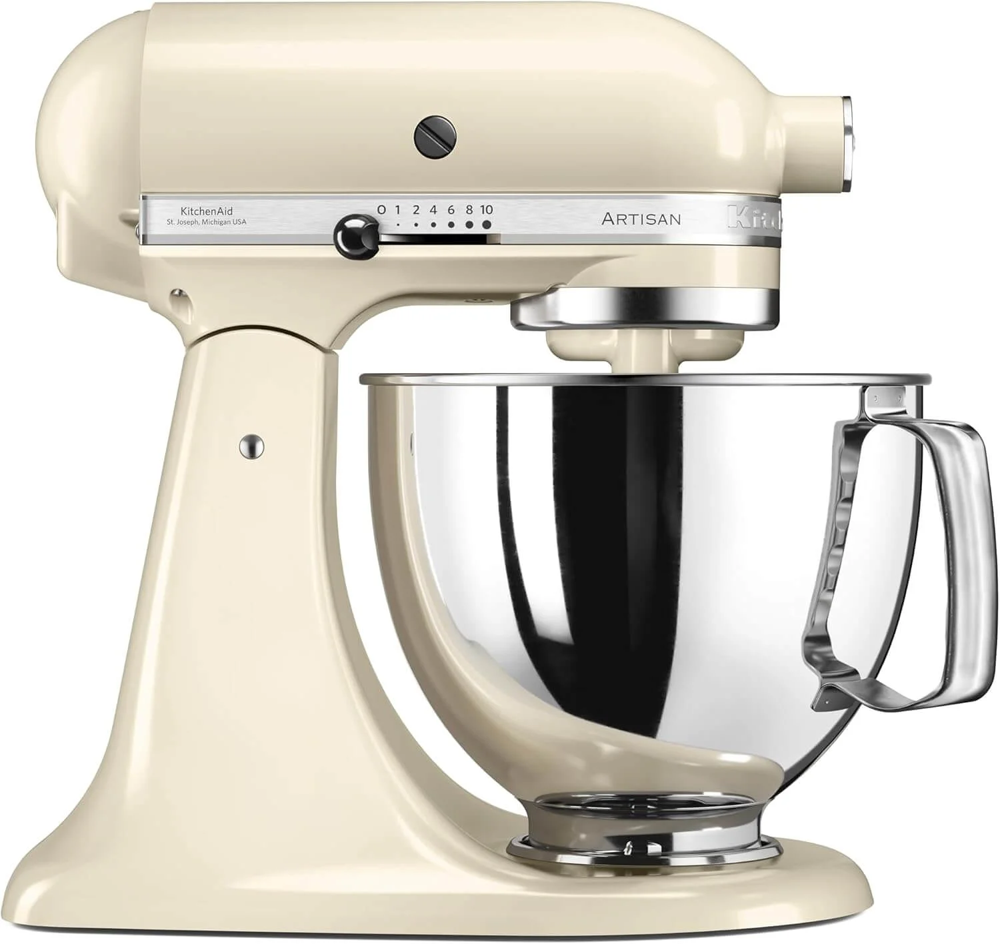

El Ecosistema KitchenAid: La Inversión Recurrente que te hace Ganar Más
Comprar una KitchenAid es solo el principio. La verdadera potencia de esta máquina reside en su cabezal multifunción, que te permite acoplar docenas de accesorios para tareas especializadas. Al centrarte en accesorios de alto valor y funcionalidad, no solo mejoras tu repostería, sino que abres nuevas líneas de negocio (ej. pasta fresca o masas de panadería especializada).
Los 5 Accesorios KitchenAid que No Pueden Faltar en tu Cocina Profesional
1. Set de Rodillos y Cortadores de Pasta (Alto margen)
Este es el accesorio más popular y caro. Convierte tu batidora en una máquina para hacer pasta fresca (espaguetis, fetuccini, lasaña). Dato clave: Te permite diversificar tu menú y vender productos artesanales a precios premium.
🛒 Kit Recomendado:El set original de 3 piezas de KitchenAid. Calidad y durabilidad garantizadas.

2. Moledor de Alimentos y Embutidora
Aunque no es de repostería pura, este accesorio es esencial si ofreces pasteles o catering que requieren relleno. Ahorra tiempo al moler frutos secos, chocolate y carne para rellenos salados.
🛒 Kit Recomendado: El moledor de metal (más duradero y profesional) frente al de plástico.

3. Picadora de Carne y Cortador de Verduras
También encuentras este un poco más completo, que te ahorra mucho más tiempo en cortar verduras y frutas
🛒 Kit Recomendado: El moledor de metal y Cortador de verduras multifuncional

4. Bowl Adicional o de Cerámica de Diseño
La eficiencia en la repostería se basa en tener dos bowls. Uno para merengues o cremas, y otro para masas pesadas. Los bowls de cerámica son, además, un producto de lujo estético que atrae al ojo.
🛒 Kit Recomendado: Bowl adicional de acero inoxidable, un bowl de cerámica de 4.8L o bowl de Cristal


5. Báscula Integrada o Externa de Alta Precisión
La precisión es vital en pastelería fina. Este accesorio se acopla y pesa los ingredientes directamente en el bowl. Si no tienes este accesorio, recomendamos una báscula digital externa de alta precisión.
🛒 Kit Recomendado: Báscula digital con función TARA y graduación de 0.1g.

¿Quieres Seguir Explorando?
Encuentra más guías profesionales y tu camino a la certificación con estos artículos relacionados.
📖 Más Guías Esenciales y Recetas
Descubre el resto de nuestros artículos de SEO sobre tendencias, equipamiento y técnicas avanzadas de repostería.
➡️ Ver todos los Artículos🎓 Catálogo de Cursos PRO: Repostería, Pastelería Fina, Diseño 3D y Cocina de Alta Especialización.
Explora la comparativa detallada de todos los programas disponibles: Repostería Vegana, Chocolatería, Pastelería Canina y más.
📚 Ver Todos los Cursos🔥 BONO: ¿Ya tienes los accesorios? Maximiza el Rendimiento de tus Herramientas al 100%
Una máquina profesional con accesorios costosos requiere técnica. Aprende a calibrar, usar las velocidades correctas y evitar el sobre-amasado en el módulo de 'Bases Técnicas y Tipos de Mezclas' de nuestro programa Diseñador de Pasteles: La Maestría Completa.
✨ Accede al Curso Avanzado de Pastelería y Equipamiento PROAprovecha la inversión en tu KitchenAid con la mejor formación.